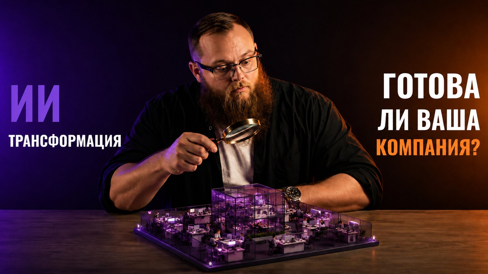

Готова ли ваша компания к ИИ-трансформации?
Индекс ИИ-зрелости: семь измерений и тридцать пять критериев

Несколько инструментов и пара пилотов — ещё не ИИ-трансформация. Чтобы понять, где компания находится на самом деле, нужен рентген: индекс ИИ-зрелости из семи измерений и тридцати пяти критериев. В этом материале — что именно оценивается в стратегии, людях, инфраструктуре, данных, моделях, внедрении и исследованиях, как из ответов складывается профиль компании и почему точки роста находятся не в сильных блоках, а в разрывах между ними.
Зачем измерять ИИ-зрелость
Многие компании заявляют, что внедряют искусственный интеллект, хотя на практике используют несколько разрозненных инструментов или проводят отдельные пилоты. Такие инициативы могут быть полезными, но сами по себе не означают системной трансформации.
Чтобы перейти от экспериментов к управляемому развитию, организации нужен способ оценить своё текущее состояние. Эту задачу решает AI Maturity Index — индекс ИИ-зрелости. Без измерения текущих позиций управлять трансформацией невозможно.
Его можно сравнить с рентгеном компании. Он показывает не только наличие технологий, но и системные ограничения. У организации могут быть сильные модели, но отсутствовать качественные данные. Может существовать современная инфраструктура, но не быть владельцев процессов. Руководство может поддерживать ИИ, однако сотрудники не умеют работать с агентами. Каждый такой разрыв ограничивает масштабирование.
Индекс переводит разговор об ИИ из области вдохновения в область измеряемых управленческих практик. Он помогает определить текущее состояние, выявить сильные и слабые стороны, сформировать общий язык между бизнесом и технологическими командами, поставить цели и построить дорожную карту.
По оценкам, около 95 % корпоративных ИИ-пилотов так и не доходят до измеримого результата. Причина обычно не в моделях. ИИ пристраивают надстройкой к процессу, в котором решения принимаются медленно, данные разрознены, а ответственность размыта, — и технология работает заметно хуже, чем в среде, для которой она создавалась.
Поэтому индекс оценивает не технологии сами по себе, а способность компании с ними работать: использовать данные, обучать агентов, перестраивать процессы под них и собирать смешанные команды людей и ИИ.
Зрелость нельзя оценивать одной цифрой — например, количеством моделей или долей сотрудников, использующих чат-боты. ИИ-трансформация зависит сразу от стратегии, людей, инфраструктуры, данных, моделей, качества внедрения и способности организации создавать новое. Поэтому индекс строится как профиль из семи измерений.
Каждое из измерений оценивается по нескольким критериям. Важен не только общий балл, но и баланс системы: сильный отдельный блок не компенсирует критический провал в другом.
Цель диагностики — не доказать, что компания современная. Её задача — честно определить, какие изменения необходимы, чтобы интеллект стал устойчивой частью операционной модели.
Измерение 1. Стратегия и управление
Первое измерение отвечает на вопрос: понимает ли компания, зачем ей искусственный интеллект и каким образом он должен создавать бизнес-ценность?
ИИ-трансформация не начинается с технологии. Она начинается с ясного представления о целях. Компания должна определить, какие показатели она хочет изменить: снизить стоимость операций, ускорить цикл, повысить качество, увеличить выручку, уменьшить риск или создать новый продукт.
Без этой связи ИИ превращается в портфель пилотов. Команды запускают интересные решения, но не могут объяснить, почему именно эти процессы были выбраны, какие ресурсы нужны для масштабирования и кто отвечает за результат.
Зрелая стратегия задаёт приоритеты и границы. Она определяет, какие решения компания строит самостоятельно, какие покупает, где допускается автономное действие, а где требуется подтверждение человека. Она также связывает инвестиции в данные, инфраструктуру, обучение и разработку с ожидаемыми эффектами.
В этом блоке оценивается наличие понятной ИИ-стратегии, вовлечённость руководства, существование KPI, формальная структура управления и место ИИ в общей стратегии бизнеса.
Особенно важна роль руководства. Если искусственный интеллект остаётся инициативой технологического подразделения, он редко меняет операционную модель. Для трансформации необходимы владельцы на уровне бизнеса, готовые менять процессы, ответственность и способы работы.
Вовлечённость руководителя измеряется не участием в рабочих группах, а тем, изменил ли он собственный способ работы. Если топ-менеджмент не пользуется ИИ сам, для сотрудников это прямой сигнал, что менять ничего не нужно: люди ориентируются на поведение, а не на заявления.
С метриками похожая ловушка. ИИ не приносит компании новых целей — стоимость, скорость, качество и выручка существовали и раньше и были зоной ответственности руководителей. Меняется не список показателей, а способность их достигать. Поэтому зрелая компания не заводит отдельный «KPI по ИИ», а включает эффект от ИИ в показатели владельцев процессов.
Управляемость появляется вместе с центром компетенций — местом, где накапливаются стандарты, методология, реестр решений и разбор ошибок. Пока такого центра нет, инициативы остаются ничейными: их некому поставить и не с кого спросить результат.
Зрелость проявляется тогда, когда решения об ИИ принимаются не случайно, а в рамках управляемого портфеля. Компания понимает, какие инициативы дают быстрый эффект, какие создают фундамент, какие несут риск и как они вместе ведут к целевой модели.
Измерение 2. Люди и культура
Даже самая сильная технология не создаст устойчивого эффекта, если сотрудники не понимают её назначения, не доверяют результатам или воспринимают ИИ исключительно как угрозу.
ИИ-трансформация требует изменения мышления. Сотрудник перестаёт быть только исполнителем и становится постановщиком задач, контролёром качества, оператором или наставником агента. Для этого нужны новые компетенции: умение формулировать цель, предоставлять контекст, оценивать результат, распознавать ошибки и понимать границы применения модели.
Зрелая культура не строится на лозунге «используйте ИИ». Компания должна создать безопасную среду для экспериментов, определить правила ответственного использования, обучить сотрудников и показать, как технология связана с их реальной работой.
В этом измерении оцениваются управление ИИ-талантами, организация работы специализированных команд, развитие компетенций, культура взаимодействия человека и машины, интеграция ИИ в повседневное управление и коммуникации.
Важно учитывать и эмоциональную сторону изменений. Если автоматизация внедряется без объяснения новой роли человека, сотрудники могут скрыто сопротивляться, не предоставлять обратную связь или продолжать работать по старой схеме. В результате формально внедрённый агент остаётся невостребованным.
Зрелая организация рассматривает интеллект как союзника. Она не обещает, что технология никогда не ошибается, а создаёт процессы проверки и обучения. Сотрудники понимают, где агент полезен, где требуется осторожность и за какой результат отвечают они сами. Именно способность объединить человеческий и машинный интеллект отличает настоящую трансформацию от простой установки нового программного обеспечения.
Борьба за ИИ-специалистов идёт не столько за зарплату, сколько за среду: сильные приходят туда, где рядом такие же сильные и где можно расти. Ответ зрелой компании — внутренняя ИИ-академия, куда собираются шаблоны, стандарты, разборы кейсов и практики самой организации. Это не курс общего назначения, а концентрат её собственного опыта.
Верхняя точка этого измерения — гибридный интеллект, когда сотрудник перестаёт принимать решение в одиночку: он получает от ИИ альтернативы, критику и сценарии, и его мышление становится расширенным. Конкурентоспособность компании начинает определяться не числом людей, а суммарным интеллектом, который она способна собрать и направить.
Измерение 3. Инфраструктура
Третье измерение — технологический фундамент, на котором работают данные, модели, агенты и системы мониторинга.
Инфраструктура — не только серверы и вычислительные мощности. Она включает среды разработки, доступ к моделям, управление версиями, интеграционные механизмы, безопасность, журналирование, наблюдаемость и процессы реагирования на инциденты.
Экспериментальный прототип можно запустить на ноутбуке. Промышленная система должна выдерживать нагрузку, обеспечивать доступность, защищать данные и позволять быстро обновлять компоненты без разрушения процесса.
Зрелая инфраструктура предоставляет командам самообслуживание. Разработчик или инженер может получить разрешённый доступ к данным, развернуть модель, подключить инструменты, запустить тест и настроить мониторинг по стандартному процессу. Чем больше действий зависит от ручных согласований и уникальных настроек, тем медленнее масштабируется ИИ.
Есть и требование к размещению: ИИ должен быть доступен там же, где живут процессы и данные. Если часть систем работает на собственных серверах, модели должны исполняться и там; если часть вынесена в облако — и в облаке тоже. Иначе агент оказывается отрезан от того, ради чего создавался.
Отдельное правило появляется, когда агент действует сам: у него должны быть ровно те права, которые нужны для задачи, и ограничители, задающие границы допустимого. Свобода действия без границ — это не автономия, а источник инцидентов. Сами инциденты при этом полезно рассматривать как обучающие примеры: каждый разобранный сбой уточняет поведение системы.
В этом блоке оцениваются готовность к ИИ-нагрузкам, доступность инфраструктуры для команд, управление инцидентами, доступ к библиотекам и инструментам, безопасность и соответствие требованиям.
Отдельная задача — управление стоимостью. Интеллектуальные системы потребляют вычислительные ресурсы, токены, хранилища и сетевой трафик. Без наблюдаемости компания может получить технически работающий, но экономически неустойчивый продукт.
Фундамент считается готовым не тогда, когда всё построено, а когда решение можно провести по всему пути без ручных исключений. Только при таком фундаменте ИИ можно внедрять быстро, безопасно и системно.
Измерение 4. Данные
Если модель является мозгом интеллектуальной системы, то данные выполняют роль памяти и сенсоров.
Без качественного контекста агент не понимает, что происходит в компании. Ему необходим доступ к клиентам, продуктам, операциям, документам, событиям и результатам прошлых решений. При этом данные должны быть не только доступны, но и управляемы.
Зрелая дата-инфраструктура объединяет источники в сквозные потоки. Компания знает происхождение показателей, контролирует качество, определяет владельцев, разграничивает доступ и отслеживает изменения. Данные движутся от систем к моделям, а результаты работы моделей возвращаются в бизнес и становятся новым источником обучения.
В этом блоке оцениваются управление данными, степень централизации платформы данных, качество данных, использование данных в управлении, готовность к обучению и поддержке моделей.
Особенно опасна ситуация, когда разные подразделения используют разные определения одной сущности. Если продажи, финансы и поддержка по-разному понимают активного клиента, агент не сможет сформировать согласованное решение. Поэтому перед автоматизацией часто требуется не новая модель, а нормализация данных и бизнес-терминов.
Практический ответ на разрозненность — фабрика данных: единая точка входа, где источники каталогизированы, связаны и выдаются по правам. Это может быть хранилище, озеро или доменная сеть данных — важен не выбор архитектуры, а то, что агенту не нужно искать данные по всей компании. Он приходит в одно место и получает всё, к чему допущен.
Здесь же оценивается готовность данных к обучению: есть ли переиспользуемые датасеты и стандарты разметки — или каждый новый пилот собирает данные заново вручную. Во втором случае ИИ навсегда остаётся экспериментом: такую подготовку невозможно ни повторить, ни масштабировать.
Качественные данные позволяют создать цифровое представление компании: карту клиентов, процессов, документов, решений и связей между ними. На такой основе можно построить корпоративную память и в перспективе — цифрового двойника организации. Данные становятся стратегическим активом не тогда, когда их много, а когда на их основе можно надёжно принимать решения и выполнять действия.
Измерение 5. Модели
Модели превращают данные в прогнозы, объяснения, рекомендации и действия.
Компания может использовать разные классы моделей: традиционное машинное обучение, нейронные сети, большие языковые и мультимодальные модели, системы ранжирования, прогнозирования и оптимизации. Зрелость заключается не в выборе одной универсальной технологии, а в способности подобрать подходящий метод для конкретной задачи.
Не каждый процесс требует генеративного ИИ. Для точного расчёта лучше использовать детерминированный алгоритм. Для прогноза спроса — специализированную статистическую модель. Для анализа неструктурированных документов и общения — языковую модель. Агентная система может объединять эти компоненты.
В этом измерении оцениваются масштаб и разнообразие портфеля моделей, доля решений в промышленной эксплуатации, скорость вывода, качество мониторинга и зрелость инженерных практик.
Ключевой переход происходит тогда, когда компания перестаёт относиться к моделям как к экспериментам и начинает управлять ими как активами. Она знает, какие модели существуют, кто является владельцем, где они используются, на каких данных обучены, какой эффект дают и когда должны быть обновлены.
Начинается это с реестра: какие модели существуют, в какой версии, на каких данных обучены, какие метрики давали на старте и дают сейчас, где встроены и какой эффект приносят. Версия здесь не формальность — одна и та же модель в разных редакциях работает по-разному, а тихую деградацию из-за смены данных видно только в сравнении.
Второй практический вопрос — сколько моделей действительно работает под нагрузкой. Пока модель не вышла в эксплуатацию, она остаётся знанием без действия, и компания, застрявшая в бесконечных пилотах, не внедряет ИИ, а исследует его.
Третий — длина цикла. Обучение модели всегда эксперимент: результат редко получается с первой попытки, поэтому зрелость измеряется не разовым успехом, а тем, как быстро можно сделать следующую попытку.
Промышленная модель нуждается в версионировании, тестах, контроле качества, журналировании и процедуре отката. Для генеративных систем дополнительно необходимы оценка ответов, защита от нежелательного поведения и контроль контекста.
Зрелость моделей — это способность не только создать интеллектуальный компонент, но и надёжно встроить его в бизнес, измерить влияние и постоянно улучшать.
Измерение 6. Внедрение ИИ
Шестое измерение показывает, работает ли искусственный интеллект в реальных процессах или остаётся на уровне презентаций и прототипов.
Компания может иметь сильную исследовательскую команду и современные модели, но не получать эффекта, если решения не интегрированы в повседневную работу. Настоящая зрелость проявляется в изменении поведения организации.
В этом блоке оценивается доля процессов с ИИ в промышленной эксплуатации, степень усиления бизнес-функций, охват клиентских путей агентами, качество самого процесса внедрения и удовлетворённость сотрудников интеллектуальными инструментами.
Важно измерять не количество моделей, а глубину интеграции. Одно решение, которое изменило критический процесс, может быть ценнее десятков пилотов. Агент должен получать реальные данные, выполнять полезные действия, иметь владельца, метрики и поддержку.
Считать глубину проще, разложив процесс на операции: приём сигнала, сбор данных, проверка условий, решение, действие, контроль. Тогда вопрос перестаёт быть бинарным «внедрён ИИ или нет» и становится измеримым — какая доля операций выполняется без человека.
Внедрение включает не только техническую интеграцию. Необходимо изменить регламенты, распределение ответственности, инструкции, интерфейсы и обучение сотрудников. Если новый агент существует параллельно старому процессу, люди часто продолжают работать привычным способом, а автоматизация создаёт дополнительный слой нагрузки.
Зрелая организация проектирует целевой процесс заново. Она определяет, какие операции выполняет агент, какие остаются человеку, где требуется подтверждение, как обрабатываются исключения и кто отвечает за результат.
Доказательством служит A/B-тест: какое-то время процесс идёт в двух режимах — с агентом и без. Успехом считается не рост одной метрики, а рост без ухудшения остальных: скорости, качества, стоимости и клиентского опыта. Тогда масштабирование опирается на проверенный эффект, а не на энтузиазм команды.
Последний критерий этого блока — доверие. Если сотрудники не понимают агента, не полагаются на него или обходят стороной, внедрение провалилось, даже когда технически всё работает. Поэтому агента ставят туда, где люди уже работают, — в их мессенджер, почту, рабочую систему, а не в отдельный кабинет, куда нужно специально заходить.
В конечном счёте именно внедрение связывает стратегию, данные, модели и инфраструктуру с экономическим эффектом. Без него интеллект остаётся потенциальной возможностью, а не частью бизнеса.
Измерение 7. Исследования и разработки
Седьмое измерение показывает, способна ли компания не только применять готовые технологии, но и создавать новые знания, методы и решения.
R&D особенно важен в областях, где стандартные продукты не дают конкурентного преимущества. Если компания работает с уникальными данными, сложными процессами или новым рынком, ей необходимо экспериментировать, формулировать гипотезы и проверять границы существующих технологий.
Зрелый исследовательский контур объединяет бизнес-задачи, лаборатории, продуктовые команды и внешних партнёров. Результат исследования не должен оставаться в отчёте. Он должен переходить в прототип, продукт, модель, методику или стратегическое решение.
В этом измерении оцениваются партнёрства с университетами и научными центрами, качество исследовательского процесса, доля инициатив R&D, применимость результатов и активность в профессиональном сообществе.
Важно различать исследование и бесконечный эксперимент. R&D должен иметь вопрос, метод, критерии проверки и путь к применению. Даже отрицательный результат может быть ценным, если он сокращает пространство неопределённости и предотвращает дорогостоящую ошибку.
Способность проводить исследования формирует долгосрочное преимущество. Готовые инструменты быстро становятся доступными всем участникам рынка. Уникальность возникает там, где организация умеет создавать собственные методы, данные, знания и интеллектуальные продукты. Зрелая компания не просто догоняет технологический рынок. Она участвует в его формировании и превращает исследования в механизм постоянного обновления бизнеса.
Есть и ориентир по объёму: в сбалансированном портфеле исследовательские инициативы занимают порядка десятой части. Этого достаточно, чтобы смотреть дальше текущего горизонта, и не настолько много, чтобы жертвовать эксплуатацией. Ресурс на них высвобождает как раз автоматизация рутины: чем больше повторяемой работы забирает ИИ, тем больше остаётся на поиск нового.
Здесь же проходит граница открытости. Методами, инструментами и инженерными наработками делиться выгодно — это возвращается чужим опытом, репутацией и людьми. Корпоративные данные и обученные на них модели не публикуются никогда — именно они и есть накопленное преимущество.
Как читать профиль зрелости
Полная диагностика включает семь измерений и тридцать пять критериев. Каждый критерий можно оценить по шкале от одного до пяти, затем рассчитать среднее значение по каждому блоку и применить весовые коэффициенты в зависимости от приоритетов компании.
Веса не обязаны быть равными, и по умолчанию они не равны. Тяжелее всего в этой модели весит внедрение: это единственный блок, который сам по себе меняет показатели бизнеса, остальные создают для него условия. Легче всего — исследования: они определяют не сегодняшний результат, а горизонт через несколько лет.
Дальше арифметика простая: оценка каждого из тридцати пяти критериев, среднее по блоку, умножение на вес, сумма — и нормализация к стобалльной шкале, где единица по всем критериям даёт ноль процентов, а пятёрка по всем — сто. Именно поэтому «сорок процентов» и «четвёрка» — разные вещи: проценты считаются от разбега шкалы, а не от её вершины.
Итоговый показатель может быть выражен в процентах, однако одна цифра не должна скрывать структуру. Главная ценность диагностики — профиль зрелости.
Например, компания может иметь развитую инфраструктуру и сильные модели, но слабую культуру и низкий уровень внедрения. Это означает, что дальнейшие инвестиции в технологию не решат основную проблему. Нужно менять процессы, обучение и ответственность.
Другая организация может иметь поддержку руководства и понятную стратегию, но недостаточно качественных данных. В таком случае логичным приоритетом станет создание дата-фундамента, а не запуск большого числа агентов.
Основные точки роста находятся в разрывах между блоками. Система ограничена своим самым слабым критическим элементом. Поэтому цель — не максимальный балл по каждому направлению, а достаточный баланс для выбранной бизнес-задачи.
На основе профиля формируется дорожная карта: что исправить немедленно, что развивать в среднесрочной перспективе и какие возможности открываются после создания фундамента.
Диагностику полезно повторять регулярно, например раз в квартал. Это позволяет видеть динамику, проверять эффект инициатив и корректировать стратегию.
AI Maturity Index — не отчёт для демонстрации инвесторам и не рейтинг современности. Это инструмент внутренней рефлексии. Он показывает, где организация действительно готова к интеллектуальной трансформации, а где пока существует хаос, который ИИ способен только усилить.
Что важно запомнить
Зрелость — это профиль, а не балл
Семь измерений и тридцать пять критериев показывают структуру, которую любая единая цифра скрывает.
Система ограничена самым слабым звеном
Сильные модели и инфраструктура не компенсируют отсутствие владельцев процессов и обученных людей.
Стратегия — это принятые решения
Приоритетный показатель, граница «строим или покупаем», зона автономии и ожидаемый эффект вложений.
Считается глубина, а не количество
Одно решение, изменившее критический процесс, весит больше, чем десяток параллельных пилотов.
Самый тяжёлый блок — не технологический
Больше всего в оценке весит внедрение, меньше всего — исследования: индекс меряет работу, а не оснащённость.
Диагностика регулярная, а не разовая
Раз в квартал видна динамика: сработали ли инициативы и не появился ли новый разрыв.
где организация действительно готова к трансформации — и где пока существует хаос, который ИИ способен только усилить.
Дальше — практика
Эта статья и её продолжение собраны из первой лекции курса по автоматизации бизнес-процессов с ИИ-агентами.
В следующей статье — стратегия внедрения: дорожная карта из трёх горизонтов, где строить своё, а где взять готовое, и три уровня внедрения агентов.
От диагностики бизнеса
— до работающего агента.